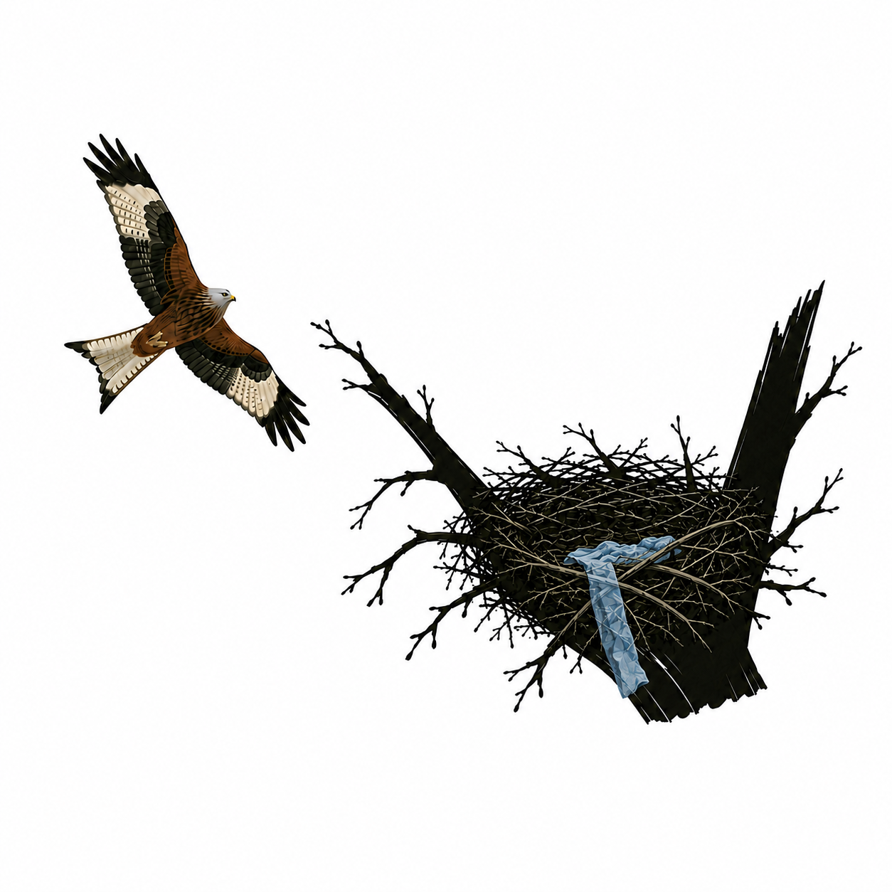

🪶 NestMap
terenowa ewidencja gniazd ptaków

Mapa
Przesuń mapę tak, aby krzyżyk wskazywał miejsce gniazda.
＋
🗺️ Orto / ulice
🌲 Drzewostany BDL
📍 Moja lokalizacja
☰ Menu
📍 Krzyżyk wskazuje miejsce gniazda.
Rejestruj
KOD
Ukryj gniazdo
Historia
✏️ Edytuj
Anuluj
Usuń
Numer kontroli
1
2
3
4
💾 Zapisz kontrolę
← Wróć do mapy
Menu NestMap
×
💾 Przygotuj mapę offline
📐 Eksportuj widoczny fragment
🏷️ Napisy BDL ✓
👁️ Ukryj gniazda
👁️ Odkryj gniazda
🗑️ Usuń gniazda z widocznego fragmentu mapy
Filtruj gniazda
Rok
Wszystkie lata
Pokaż wszystkie
Wyczyść wybór
Gniazda
🔢 Liczba gniazd wg gatunku
Eksport
📤 CSV
📍 KMZ
🗺️ SHP
📍 GPX
CSV, KMZ i SHP zawierają dane formularza; CSV/SHP uwzględniają też dane BDL. GPX zawiera tylko punkty i ich nazwy.